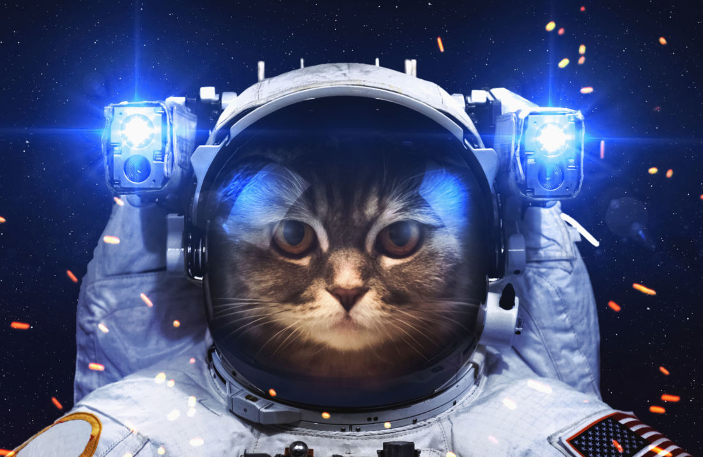
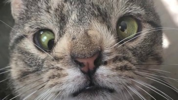
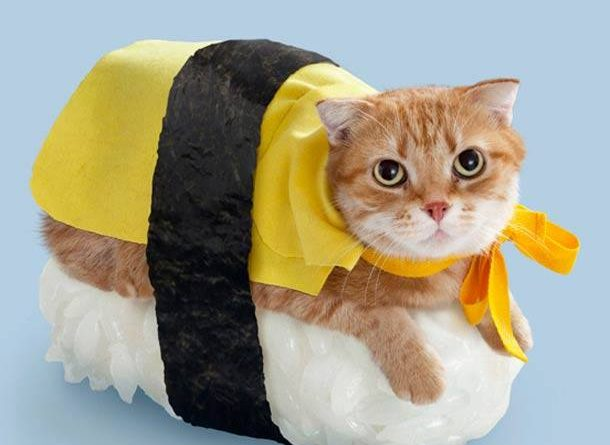
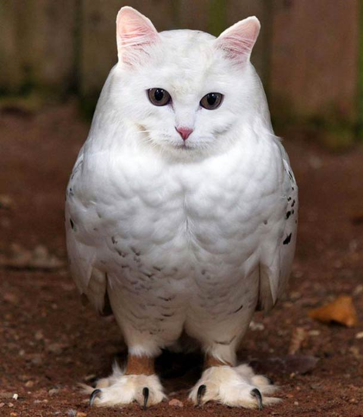
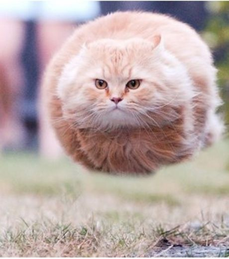

Voici nos chats :
Premièrement voici Galactus le chat de l'espace agé de 5 ans, nous l'avons receuilli alors qui se balladait au bord de la Lune ce chat aime l'aventure et recherche des maîtres qui bougent beaucoup.
Nous arrivons maintenant à Bousitron bien qu'ayant un stravisme à un stade très aigu ce chat à un grand coeur et est adorable vous ne le regretterez pas. (sauf quand il aura défécer dans vos chaussons)
Et maintenant voici Ultimate Sushi le chat cosplayeur il animera vos soirées entre amis et pourra même vous servir vos sushis sur un plateau
La plus belle biensur c'est Chaouette délaissée pour ces différences elle déborde d'amour et n'a personne à qui le donner.
Chaballon est un animal très joueur très énergique et facile à vivre il égaïera votre foyer par sa présence.
